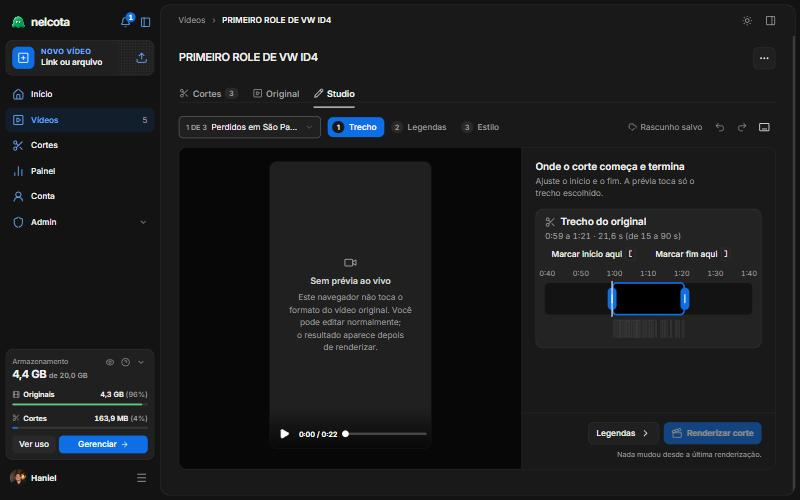
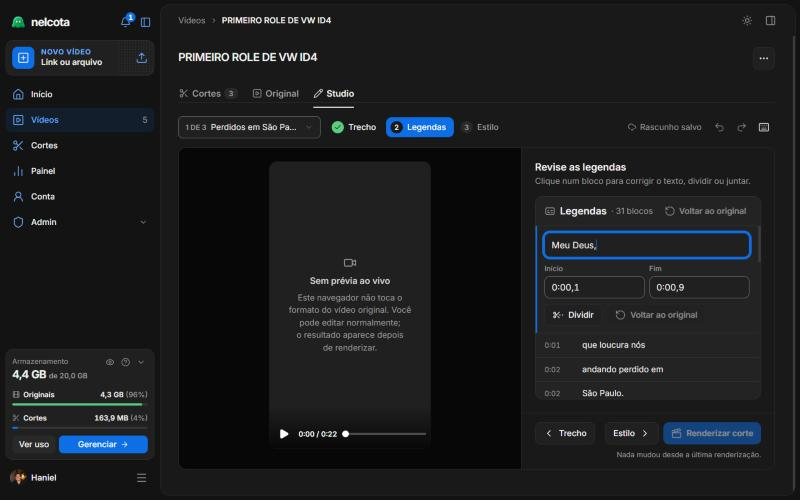
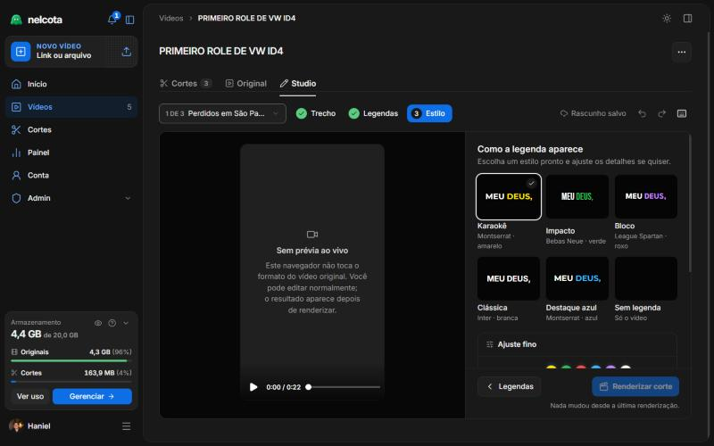

Studio · atual + 3 direções
Legendas reais do corte "Perdidos em São Paulo com o ID4" (0:59 a 1:21, 31
blocos). O quadro do vídeo é neutro: os arquivos deste vídeo não estão nesta
máquina. Computador 1440 px e celular 390. Nada disso está no app ainda.
Atual



-
Pouco espaço para editar: título, abas e barra do Studio ocupam uns
250 px antes do editor; as legendas cabem em 7 linhas numa caixa com rolagem
própria.
-
Passos escondem o resto: Trecho, Legendas e Estilo aparecem um de
cada vez; para ver o estilo enquanto corrige o texto é preciso ir e voltar.
-
Corrigir uma palavra parece formulário: abrir o bloco, campo de
texto, campos Início e Fim em números.
-
Trecho minúsculo: a barra do corte é um cartão dentro do painel, com
90 s espremidos em 200 px.
-
No celular: a prévia ocupa a tela inteira e as ferramentas ficam
abaixo da dobra.
Igual nas três: o Studio vira um editor de verdade, com uma barra só: voltar,
nome do corte com anterior e próximo, "Rascunho salvo", desfazer, refazer e
"Renderizar corte" sempre à vista. Sem passos 1, 2, 3. A legenda aparece na prévia
no estilo escolhido. Palavras ouvidas com pouca certeza ("rótimo") ficam marcadas
para revisar. Os atalhos de hoje continuam (espaço, I, O, Ctrl+Z).
Recomendo
A · Editor com linha do tempo
Ideia: o jeito do CapCut, que quem posta cortes já conhece. Tela
cheia, sem o menu do app. Esquerda: Legendas e Estilo. Centro: prévia
grande. Direita: detalhes do bloco escolhido. Embaixo: linha do tempo com o
trecho (arrasta as alças amarelas) e os blocos de legenda.
Bom em: tudo visível ao mesmo tempo; mudar o trecho é arrastar, não
digitar números; clicar na legenda da prévia ou da linha do tempo abre o
texto.
Custa: é a mudança maior; no celular a linha do tempo fica fina e as
ferramentas vão para abas embaixo.
B · Editar pelo texto
Ideia: o jeito do Descript. O corte vira um texto corrido: clica na
palavra e corrige, Enter divide o bloco, Backspace junta. As marcas Início e
Fim ficam dentro do texto e se arrastam para pegar mais ou menos frase.
Estilo numa faixa sob a prévia.
Bom em: o mais fácil para quem nunca editou vídeo; corrigir legenda
vira corrigir um texto.
Custa: ajuste fino de tempo (décimos de segundo) fica escondido;
arrastar Início e Fim pelo texto só corta entre palavras.
C · Tudo numa coluna
(menor mudança)
Ideia: mantém a página com abas, mas tira os passos: Trecho, Legendas
e Estilo um embaixo do outro, com a rolagem da página. Prévia fixa à
esquerda. Barra de renderizar presa embaixo, dizendo o que mudou.
Bom em: pouco para aprender e pouco para construir.
Custa: continua apertado; trecho e legendas longe um do outro; no
celular a prévia sai da tela quando você desce até o estilo.
A · Editor com linha do tempo Recomendo
Bloco "caminho rótimo" aberto para corrigir, com Dividir e Juntar. No celular,
Trecho, Legendas e Estilo abrem uma gaveta sobre a linha do tempo.
B · Editar pelo texto
Clicou em "rótimo": sugestão de troca. O texto antes de Início e depois de Fim é
o resto do vídeo, apagado.